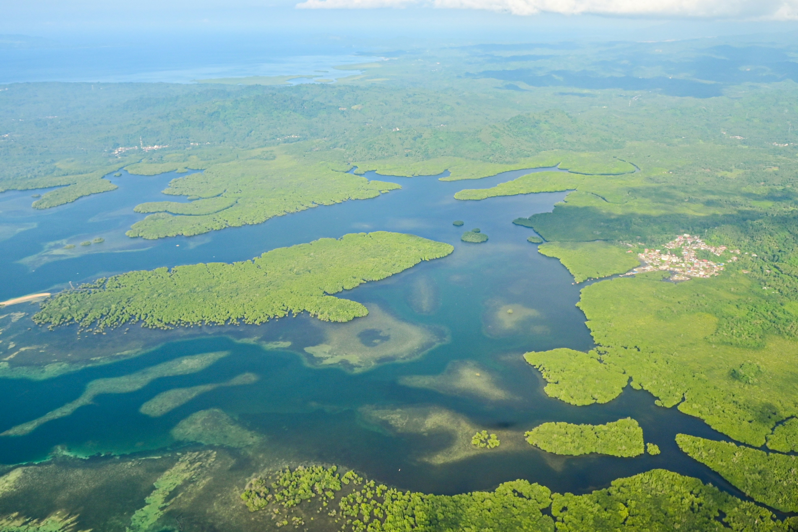

Paisaje de los Esteros del Iberá con fauna silvestre
Esteros del Iberá
Los Esteros del Iberá son uno de los humedales más importantes del mundo y el segundo más grande de Sudamérica. Es un paraíso de biodiversidad y un lugar ideal para el ecoturismo familiar, donde se puede observar fauna silvestre en su hábitat natural. El acceso principal turístico es Colonia Carlos Pellegrini.
Fechas y duración
- **Estadía**: 27/10 al 29/10 (3 días)
- **Cómo llegar**: Desde Corrientes o Posadas en bus/transfer/auto a Colonia Carlos Pellegrini.
Lugares imperdibles
Actividades recomendadas
- Safaris en lancha por la Laguna Iberá para avistar yacarés, carpinchos, ciervos de los pantanos y aves.
- Caminatas guiadas por los senderos para observar la fauna terrestre.
- Safaris nocturnos (opcional, para ver animales de hábitos nocturnos).
- Cabalgatas por los alrededores (para edades adecuadas).
- Paseos en canoa o kayak (en zonas permitidas y con guía).
- Avistaje de aves.
- Disfrutar de la tranquilidad y el contacto con la naturaleza.
Gastronomía destacada
La gastronomía en Iberá se basa en la cocina casera y regional, con ingredientes frescos de la zona. Las posadas suelen ofrecer pensión completa con platos típicos, a menudo adaptándose a necesidades dietéticas específicas si se avisa con antelación.
Restaurantes recomendados (Generalmente en Posadas)
Confiterías y cafés
| Confitería |
Tipo |
Sin Gluten |
Sin Azúcar |
| (Opciones limitadas) |
Principalmente en posadas |
✔️ |
✔️ |
| Minimercados |
Para abastecerse |
✔️ |
✔️ |
Generador de Menú Saludable ✨
Obtén sugerencias de menú para un día completo (desayuno, almuerzo, cena) adaptadas para dietas bajas en carbohidratos, aptas para diabéticos y, si es posible, sin gluten, inspiradas en la gastronomía de Esteros del Iberá.
Sugerencias de Alojamiento con IA üè®
Obtén recomendaciones de alojamiento en Esteros del Iberá, considerando opciones familiares, seguras y bien ubicadas.
Generando sugerencias...
Consejos Adicionales para Familias con IA ü뮂Äçüë©‚Äçüëß‚Äçüë¶
Recibe consejos personalizados para disfrutar Esteros del Iberá en familia, incluyendo actividades, seguridad y logística.
Generando consejos...
Análisis de Presupuesto con IA üí∞
Obtén un análisis y desglose del presupuesto orientativo para tu estadía en Esteros del Iberá, con posibles optimizaciones.
Analizando presupuesto...
Alojamiento (ejemplos)
- Posada de la Laguna
- Irupé Lodge
- Cabañas y hospedajes rurales en Colonia Carlos Pellegrini
- Camping (para los más aventureros).
Coordenadas aproximadas
Colonia Carlos Pellegrini: 28° 32' S 57° 11' O
Agenda de eventos
Consejos para familias
- **Repelente de insectos es ABSOLUTAMENTE CRUCIAL.** Llevar en gran cantidad.
- Protector solar, sombrero y ropa de manga larga para protegerse del sol y los insectos.
- Binoculares para observar aves y fauna.
- Reserven alojamiento y excursiones con mucha anticipación, la oferta es limitada.
- La mayoría de las actividades son al aire libre; estén preparados para diferentes condiciones climáticas.
- Ideal para niños interesados en la naturaleza y los animales.
Presupuesto orientativo
| Concepto |
Precio estimado (USD) |
| Alojamiento (noche, familia) |
70–200+ (incl. excursiones/comidas) |
| Comida (por día, familia) |
Incluido en posada (generalmente) |
| Transporte local (por día) |
0–10 (dentro del pueblo) |
| Actividades y tours (por día) |
50–100+ (según excursiones) |
| Entradas museos/atracciones |
0–10 |
Tips culturales
- La cultura guaraní y el respeto por la naturaleza son muy fuertes.
- El ritmo de vida es tranquilo y en contacto con la naturaleza.
- La hospitalidad de los lugareños es destacada.
- Aprender algunas palabras en guaraní puede ser divertido para los niños.
Mapa de Esteros del Iberá (Colonia Carlos Pellegrini)
Ver mapa más grande